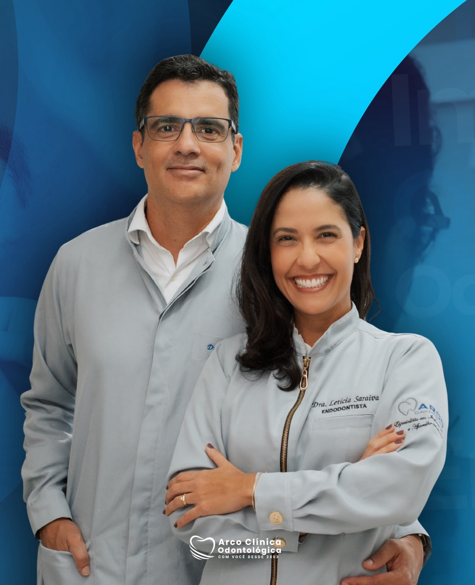
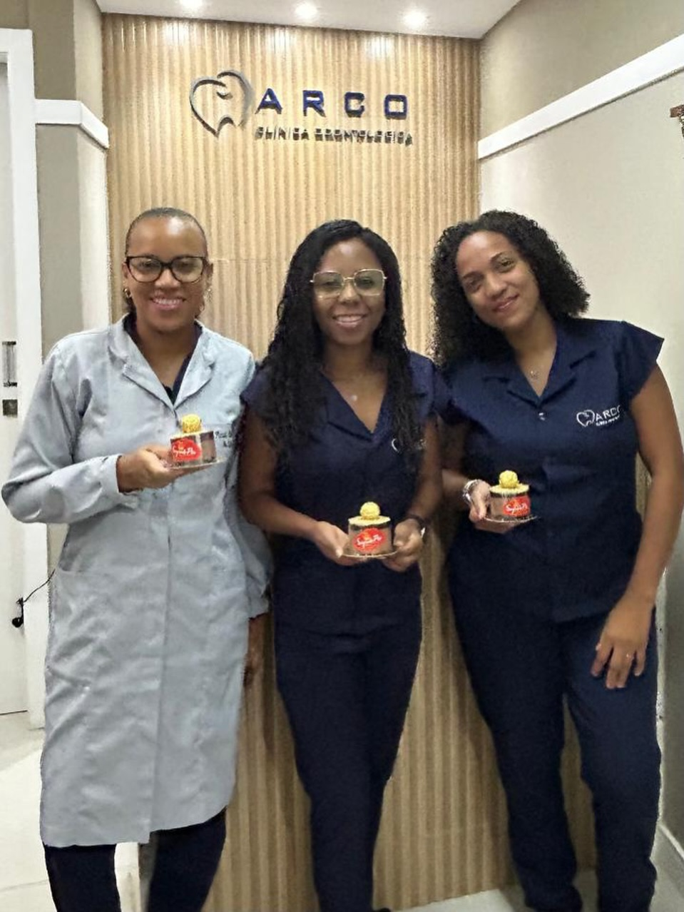

ARCO CLÍNICA UM CONVITE AO CUIDADO
Um cuidado
feito para você.
Um espaço para acolher, ouvir e cuidar com atenção a cada detalhe da sua experiência.
Conheça a clínicaO seu bem-estar inspira
o nosso jeito de cuidar.
DESCUBRA MAIS ↓o nosso jeito de cuidar.
01 / A CLÍNICA
DESCUBRA A
ARCO CLÍNICA
Um jeito mais próximo
de cuidar de você.
de cuidar de você.
Uma experiência de cuidado feita com atenção, escuta e acolhimento. Cada detalhe importa para que você se sinta à vontade do começo ao fim.
Quem faz

Gente que
acolhe
02 / DEPOIMENTOS
Quem conhece a Arco
tem histórias para contar.
Experiências compartilhadas por pacientes da clínica.
Dr. Luan foi um achado.
Marcela destacou a atenção da equipe e a tranquilidade durante o atendimento.
Marcela SilvaAvaliação públicaÓtimo atendimento da clínica.
Claudia relatou cuidado e profissionalismo ao longo da experiência.
Claudia BorgesAvaliação públicaO atendimento na clínica foi excelente.
Jane destacou a atenção recebida e a tranquilidade na recuperação.
Jane FrancaAvaliação públicaRecomendo 100%.
Adailton relatou satisfação após ser atendido em um momento de dor.
Adailton SantanaAvaliação públicaTrechos de avaliações públicas; resumos editoriais para esta prévia.Conferir avaliações ↗
03 / PRÓXIMO PASSO
Vamos começar
uma conversa?
Conheça mais sobre a Arco Clínica ou encontre o caminho até ela.